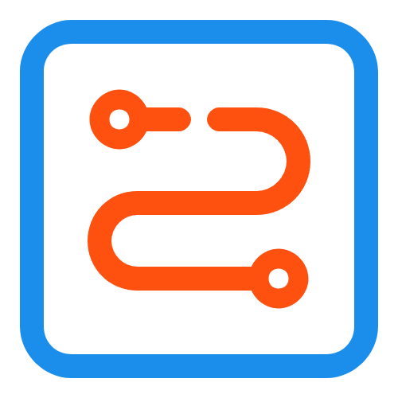
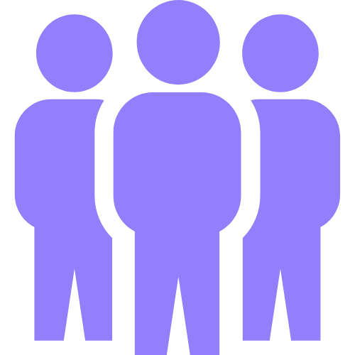

金陵地铁智行通
地铁文化旅游一体化平台
📍 当前地区：
定位中...
| 🌤 天气：
加载中...
我的位置
地铁生活服务

地铁线路简介

线路实时客流量
金陵文化导览
联系我们
地图加载区域
查询
清空
选择线路
请选择线路
地铁1号线
地铁2号线
地铁3号线
地铁4号线
地铁7号线
地铁10号线
地铁S1线
地铁S3线
地铁S6线
地铁S7线
地铁S8线
地铁S9线
选择站点：
请先选择线路
设为起点
设为终点